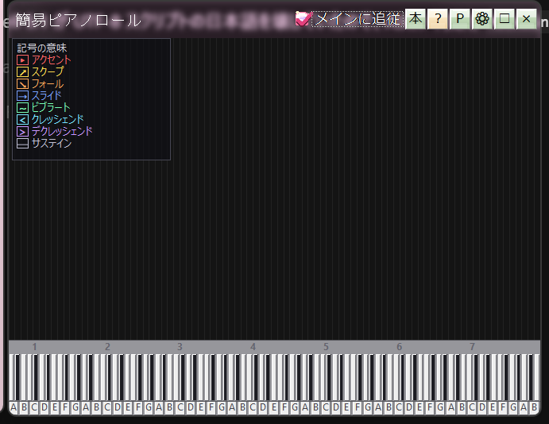

The piano roll lays the notes it detects over a keyboard so you can follow melody and harmony with your eyes. The range covers 108 keys (displayable as 88 or 108), and it is a real help when working music out by ear.

Simple piano roll
Use the Roll button on the media player, or right-click a track in the playlist. Almost all the controls live in the right-click menu on the display itself.
If it picks up too much or too little, the detection can be tuned in detail. See Tuning piano roll detection.
Detection picks fundamentals one by one and subtracts each note's overtone series from the spectrum. Octave copies (harmonic ghosts) are removed; chords or melodies that share a slot stay when residual energy and their own partials say so. Sustain is shown as a symbol only — not as a midline on every history row (that used to look like ladder noise).
What is playing can be written out as MIDI or MusicXML. This is an experimental feature.
To hear the detected notes through an instrument, Playing instruments with the VST host and Controlling Raira from a MIDI keyboard are what you want.
Open this beside the analyzer and you can watch the frequency peaks and the note names at the same time. See Waveform and spectrum analyzer.
This is automatic detection, so it is never perfect. Dense passages and percussion-heavy music are the hardest. Use it alongside your ears rather than instead of them.